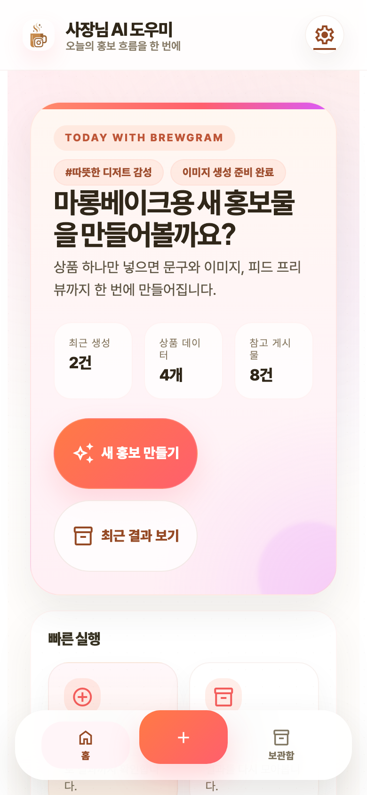
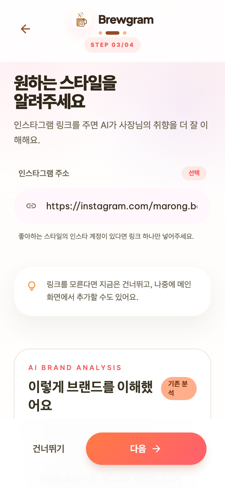
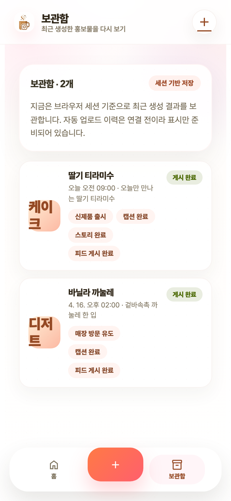
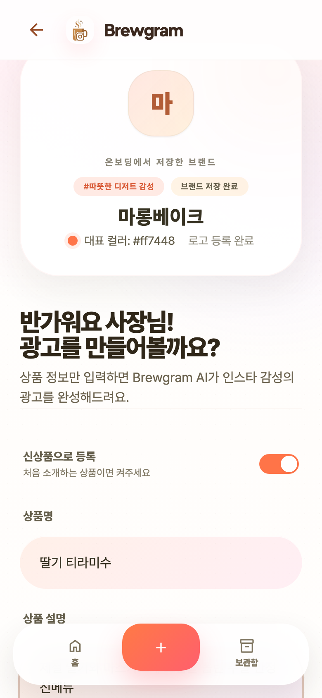

사진 한 장으로 끝내는 소상공인 인스타 광고
카페·베이커리·디저트 사장님이 상품 사진 한 장으로 홍보물 제작부터 업로드까지 이어가는 모바일 서비스

문제 공감에서 서비스 효과까지, 기승전결로 설명한다
문제 상황
작은 가게 사장님이 신메뉴를 알리고 싶지만 사진, 문구, 이미지, 업로드가 계속 밀리는 상황에서 시작한다.
시장과 접점
소상공인은 많고 팀은 작다. 고객 접점은 이미 모바일과 인스타그램으로 이동했다.
서비스 흐름
Brewgram이 브랜드를 기억하고, 상품 광고를 만들고, 업로드까지 이어주는 과정을 실제 화면으로 보여준다.
효과와 검증
기대효과는 시간 절감으로 수치화하고, 실제 사용자 테스트에서 완료 시간과 업로드율로 검증한다.
소상공인은 많고, 팀은 작다
2024년 기준 국내 소상공인 기업체는 613.4만 개, 기업체당 평균 종사자는 1.57명이다. 마케팅을 별도 직무로 분리하기 어려운 구조다.S1근거: 중기부 실태조사
고객 접점은 이미 모바일과 인스타그램에 있다
해석: Brewgram의 모바일 PWA와 피드·스토리 업로드 중심 흐름은 “사장님이 쓰는 기기”와 “고객이 보는 채널”을 직접 연결한다.DataReportal 한국 리포트통계청 모바일쇼핑
문제는 게시물을 만드는 시간이 아니라, 계속 만들어야 한다는 압박이다
사업자들은 더 자주 올려야 한다고 느낀다
Adobe Express가 2025년 6월 사업자 433명을 대상으로 조사한 결과.S5사업자 게시 빈도 조사
Brewgram은 브랜드를 기억하고 홍보물 제작부터 업로드까지 잇는다
운영 구조 근거: README 현재 구조모바일 생성·업로드 흐름 문서
사장님이 실제로 쓰는 순서
브랜드 온보딩
가게 이름, 색상, 분위기, 로고, 참고 인스타를 입력한다.
인스타 연결
전문 계정을 연결해 피드와 스토리 업로드 준비를 끝낸다.
상품 선택
신상품은 사진을 올리고, 기존 상품은 저장된 이미지를 재사용한다.
목적 선택
신메뉴, 시즌 한정, 이벤트, 영업 안내 등 게시 목적을 고른다.
광고 검수
문구와 이미지를 확인하고 필요한 경우 다시 생성한다.
업로드와 축적
피드·스토리에 올리고 결과물은 다음 생성의 히스토리로 남긴다.


처음 보는 사람도 이해하기 쉬운 데모 상황으로 보여준다

- 사장님은 오늘 신메뉴를 인스타그램에 바로 올려야 한다.
- 상품 사진, 상품명, 목적처럼 이미 알고 있는 정보만 넣는다.
- 온보딩에서 저장한 가게 분위기와 톤이 자동 반영된다.
- 피드 문구, 상세 설명, 스토리 훅, 광고 이미지가 함께 나온다.
- 결과를 검수한 뒤 인스타그램 업로드까지 이어진다.
기대효과는 “시작 부담 감소”와 업로드 시간으로 본다
1차 가정: 기존 단일 이미지 게시물 20분/건, Brewgram 입력·검수·업로드 5분/건. 사진 선택, 2~3문단 게시글 작성, 해시태그, 업로드까지 사장님이 직접 처리하는 현실적인 운영 기준이다.S11근거: 단일 사진 게시 흐름보조: 게시물 제작 시간 범위
| 게시 빈도 시나리오 | 기존 제작 20분/건 |
Brewgram 5분/건 |
월 절감 시간 | 줄어드는 부담 |
|---|---|---|---|---|
| 월 4건, 주 1회 수준 | 1시간 20분 | 20분 | 1시간 | 글쓰기 시작 4회 완화 |
| 월 12건, 주 3회 운영 | 4시간 | 1시간 | 3시간 | 빈 화면 부담 12회 완화 |
| 월 28건, 매일 운영 | 9시간 20분 | 2시간 20분 | 7시간 | 매일 업로드 루틴화 |
절감 시간의 최저임금 환산값은 월 4건 약 1만원, 월 12건 약 3.1만원, 월 28건 약 7.2만원이다. 핵심은 금액보다 “직접 글을 써야 해서 시작이 미뤄지는 부담”을 낮추는 것이다.S9근거: 2026 최저임금
시간 외 기대효과는 서비스 지표로 검증한다
서비스 내부에서 측정 가능한 지표
- 광고 생성 시작부터 업로드 완료까지 걸린 시간
- 생성 대비 실제 업로드 전환율
- 기존 상품 재사용 비율
- 주간 게시물 수 증가율
- 브랜드 온보딩 후 반복 생성 횟수
사용자에게 설명할 효과
- 카피 작성, 이미지 제작, 업로드 도구 전환을 한 흐름으로 축소
- 브랜드 가이드가 매 생성마다 자동 반영되어 톤 일관성 유지
- 신상품은 빠르게 등록하고 기존 상품은 다시 설명하지 않음
- 피드와 스토리를 모두 고려해 모바일 홍보 채널 확장
지금 중요한 이유는 AI보다 적용할 업무가 명확하다는 점이다
차별점은 모델 성능이 아니라 소상공인 업무 완결성이다
일반 이미지 생성기
- 프롬프트를 매번 새로 써야 한다.
- 브랜드 톤이 이어지기 어렵다.
- 업로드는 사용자가 따로 해야 한다.
일반 SNS 예약 도구
- 게시 일정 관리는 돕지만 콘텐츠 제작은 별도다.
- 상품 사진과 목적 기반 생성이 약하다.
- 소상공인 업종 특화가 부족하다.
Brewgram
- 브랜드를 기억하고 상품 광고를 만든다.
- 피드와 스토리 결과물을 함께 제공한다.
- 모바일에서 업로드까지 끝낸다.
결론: 작은 가게의 반복 인스타 홍보 업무를 줄이는 서비스
핵심 메시지
- 시장에는 홍보가 필요한 소상공인이 많다.
- 고객 접점은 모바일과 인스타그램으로 이동했다.
- 콘텐츠 제작은 꾸준히 하기 어렵고 시간이 든다.
- Brewgram은 브랜드 기억, 광고 생성, 업로드를 하나로 묶는다.
다음 검증 과제
- 실제 사용자 기준 제작 시간 계측
- 주간 게시 빈도 변화 확인
- 업로드 완료율과 재생성률 추적
- 사장님이 느끼는 브랜드 톤 만족도 조사
수치 근거 출처
국내 시장·모바일·소상공인 수치는 공식 통계 중심으로, 콘텐츠 제작 시간은 단일 사진 게시 흐름과 해외 사업자·마케터 조사 자료를 보조 근거로 사용했다. 20분/5분 가정은 사용자 테스트 후 보정해야 한다.